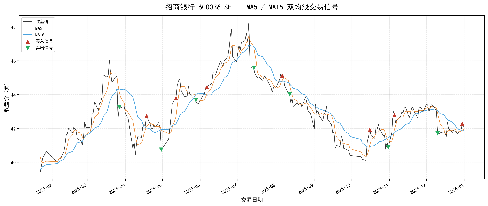
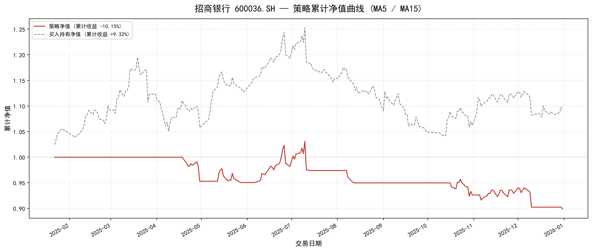

Moving Average Crossover
双均线交叉策略回测：MA5 金叉买入，MA5 死叉卖出
策略累计收益
-10.15%
买入持有收益
+9.32%
最大回撤
-12.85%
夏普比率
-1.10
买入信号
7 次
卖出信号
7 次
图1：MA5 / MA15 均线交叉与买卖信号

图2：策略累计净值 vs 买入持有净值

策略回测结论
本次回测采用招商银行 600036.SH 2025 年 1 月 22 日至 2025 年 12 月 31 日的日线数据， 使用 MA5 与 MA15 双均线交叉策略。当 MA5 自下而上穿越 MA15 时产生金叉买入信号， 当 MA5 自上而下穿越 MA15 时产生死叉卖出信号。
回测结果显示，策略累计收益为 -10.15%，而同期买入持有收益为 +9.32%， 策略显著跑输基准。主要原因是招商银行 2025 年整体呈现震荡上行走势，期间存在多次均线缠绕和反复交叉， 导致双均线策略产生了多次假信号，频繁进出带来了摩擦成本。
不过，策略的最大回撤控制在 -12.85%，波动率为 13.11%， 相比买入持有的波动率较低，说明在趋势转折或回调阶段，策略能够及时退出、降低波动。 这一结果表明，双均线策略更适合趋势较为明显的行情，在震荡市中使用时需要配合趋势过滤或止损机制。
关键提示：双均线交叉策略简单直观，但容易在震荡行情中产生反复假信号。实际应用中建议增加趋势确认、过滤条件或参数优化。